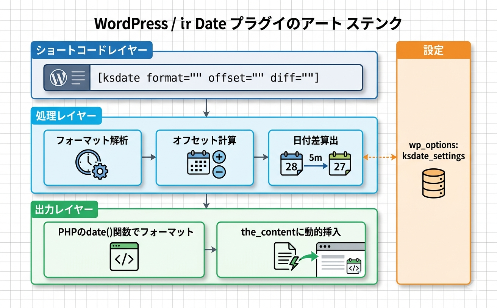

トラブルシューティング
よくある問題とその解決方法をまとめています。
ショートコードがそのまま表示される
原因: プラグインが無効化されている、またはショートコード名が間違っている
WordPress管理画面の「プラグイン」ページで「Kashiwazaki SEO Dynamic Date」が有効になっているか確認する
ショートコード名が [ksdate] であることを確認する（大文字・スペースに注意）
ブロックエディターの場合、「ショートコード」ブロックまたは「カスタムHTML」ブロックに記述しているか確認する
クラシックエディターでは本文に直接 [ksdate] と記述するだけで動作します。
日付が表示されない（空白になる）
原因: 無効なフォーマットやオフセット値を指定している
format 属性にPHPの日付フォーマットとして有効な文字列を指定しているか確認する
offset 属性が [+-]数値[ymwd] の形式になっているか確認する（例: +3d, -1m）
diff 属性が YYYY, YYYY-MM, YYYY-MM-DD のいずれかの形式になっているか確認する
管理画面の「Preview」タブで同じパラメータを試して正常に出力されるか確認する
エラーが発生した場合、本プラグインはユーザーにエラーメッセージを表示せず空文字を返します。これはフロントエンドの表示を崩さないための仕様です。
日付が更新されない（キャッシュの問題）
原因: ページキャッシュやCDNキャッシュにより古い日付が表示されている
使用しているキャッシュプラグイン（WP Super Cache、W3 Total Cache等）のキャッシュをクリアする
CDN（Cloudflare等）を使用している場合はCDNのキャッシュもパージする
キャッシュの有効期限を動的日付の更新頻度に合わせて調整する（例: 日付単位の表示なら24時間以内に設定）
ショートコードの日付はサーバーサイドでページ表示時に計算されます。ページ全体がキャッシュされている場合、キャッシュの有効期限まで日付は更新されません。
タイムゾーンがずれている
原因: WordPressのタイムゾーン設定が正しくない
WordPress管理画面の「設定」→「一般」を開く
「タイムゾーン」が正しく設定されているか確認する（日本の場合は Asia/Tokyo または UTC+9）
設定を保存し、ショートコードの出力を再確認する
本プラグインは wp_date() および wp_timezone() を使用しており、WordPressのタイムゾーン設定に従います。
管理画面が表示されない
原因: 権限不足またはプラグインの競合
管理者（Administrator）権限でログインしているか確認する（manage_options 権限が必要）
他のプラグインを一時的に無効化し、競合がないか確認する
テーマをデフォルトテーマに切り替えて動作するか確認する
プレビュー（AJAX）が動作しない
原因: JavaScriptエラーまたはAJAXの問題
ブラウザの開発者ツール（F12）を開き、コンソールにエラーが表示されていないか確認する
jQueryが正しく読み込まれているか確認する
他のプラグインやテーマがJavaScriptエラーを発生させていないか確認する
動作要件
| 項目 | 要件 |
|---|---|
| WordPress | 5.8以上 |
| PHP | 7.4以上 |
| 対応ブラウザ | モダンブラウザ（管理画面のみ） |
技術仕様
- データ保存: wp_options (ksdate_settings)
- カスタムテーブル: なし
- 外部通信: なし
- Cron: なし
- メール: なし
- セキュリティ: nonce検証、manage_options権限チェック
